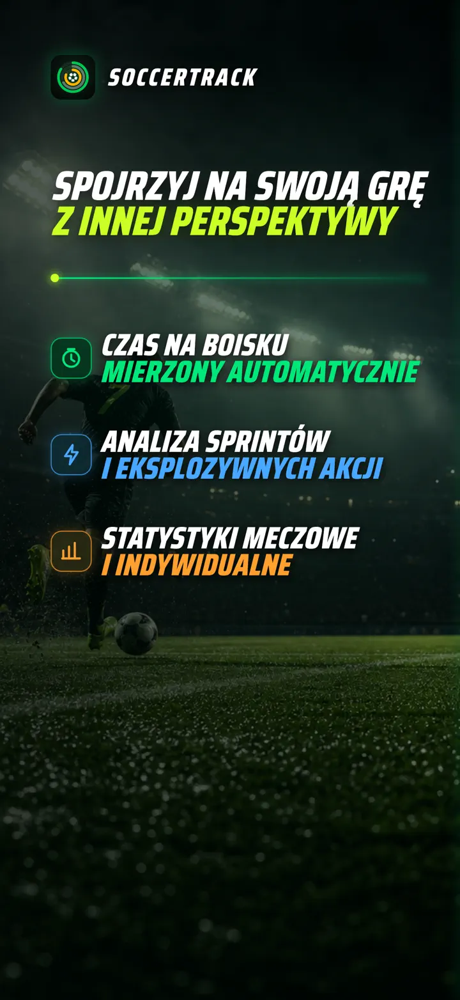
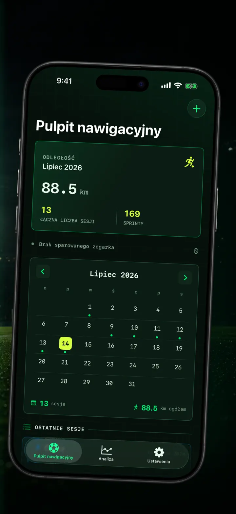
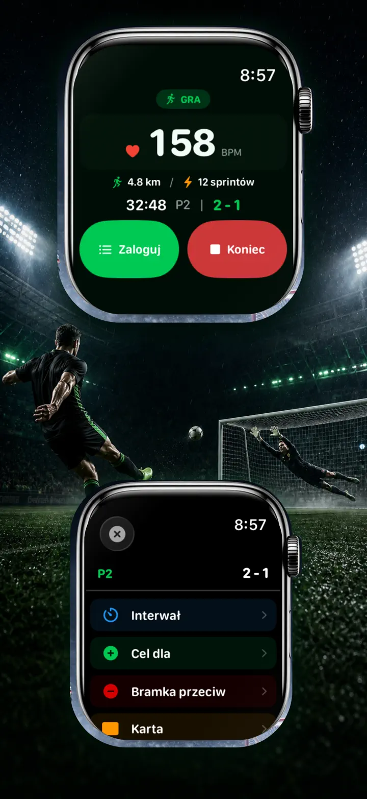
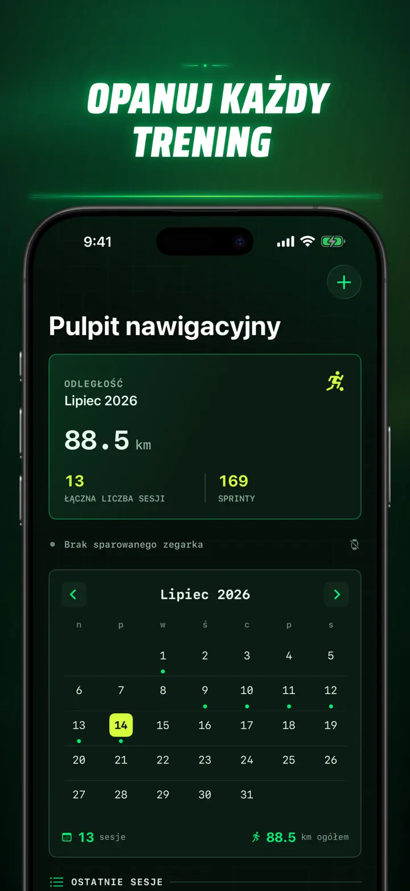
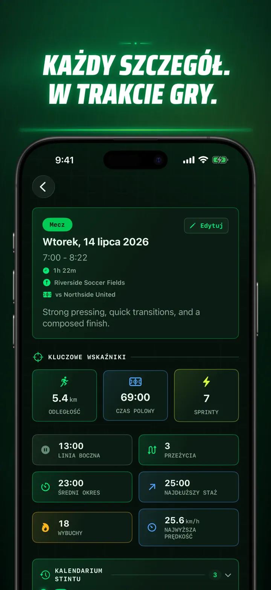
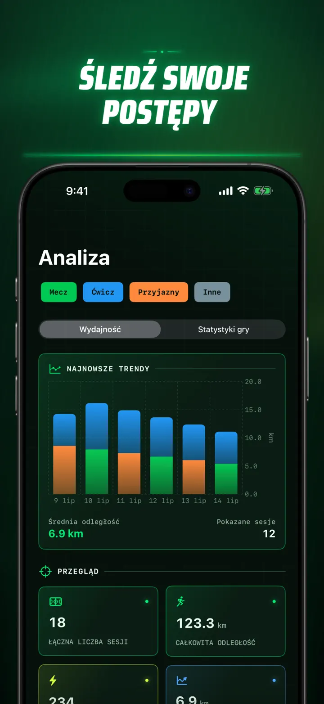
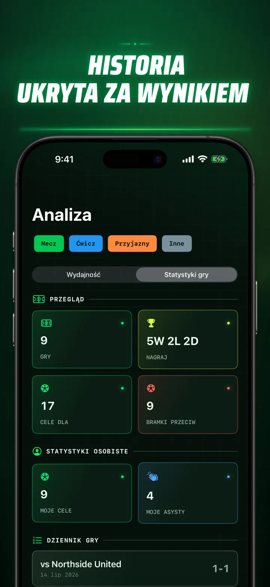
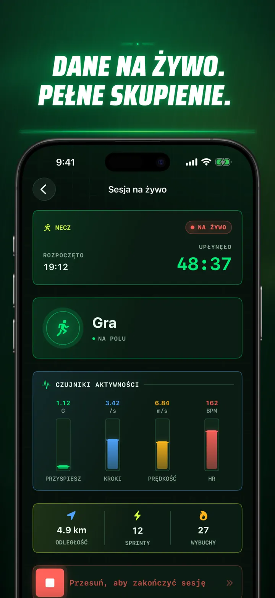
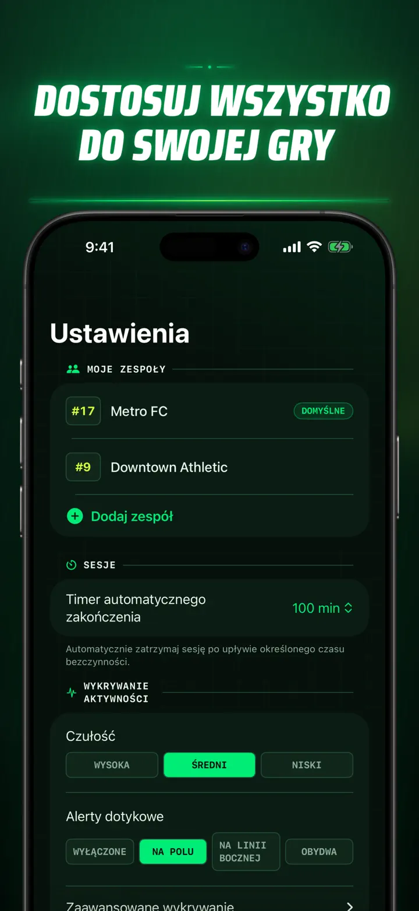
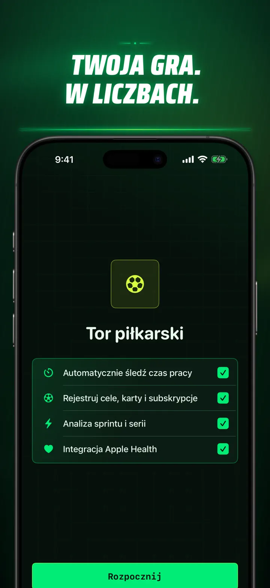

Soccer Time Track
Piłka nożna: czas i analiza
Rozpocznij sesję i graj. Apple Watch automatycznie rozdziela czas na boisku i ławce oraz zapisuje dane na żywo, sprinty, zdarzenia i trendy.
Pobierz w App Store
O aplikacji
Spójrz na swój mecz inaczej.
Soccer Time Track zmienia Apple Watch w asystenta meczowego dla zawodników, którzy chcą wiedzieć więcej niż tylko wynik końcowy. Uruchom sesję z nadgarstka, skup się na grze, a potem zobacz na iPhonie szczegółowy obraz swojego występu.
AUTOMATYCZNY CZAS NA BOISKU
Dowiedz się, kiedy naprawdę byłeś w grze. Sygnały ruchu, treningu i lokalizacji pomagają odróżnić grę, niską aktywność i czas na ławce. Otrzymujesz:
- Czas na boisku i ławce
- Odcinki gry i czytelną oś czasu
- Szczegółowy przebieg całej sesji
MECZ PROSTO Z NADGARSTKA
Wybierz Mecz, Trening, Towarzyski lub Inne. W trakcie gry zapisuj:
- Bramki zdobyte i stracone
- Własne gole i asysty
- Żółte i czerwone kartki
- Zmiany i oznaczenia części meczu
TWÓJ WYSTĘP W LICZBACH
Zobacz więcej niż minuty:
- Dystans
- Średnią i maksymalną prędkość
- Sprinty i zrywy o wysokiej intensywności
- Tętno i aktywne kalorie
- Kadencję i przyspieszenie
DANE NA ŻYWO, PEŁNE SKUPIENIE
Połączony iPhone może wyświetlać pomiary na żywo, gdy Apple Watch nadal rejestruje trening. Ty skupiasz się na meczu, a dane powstają w tle.
ŚLEDŹ SWÓJ POSTĘP
Zbierz mecze, treningi, spotkania towarzyskie i inne sesje w jednej historii. Przeglądaj trendy i rekordy osobiste, porównuj występy oraz dodawaj drużynę, numer koszulki, przeciwnika, miejsce i notatki, aby zachować kontekst każdego wyniku.
Potrzebujesz danych gdzie indziej? Eksportuj sesje, odcinki gry i zdarzenia meczowe jako CSV lub JSON.
STWORZONY DLA APPLE WATCH I APPLE HEALTH
Za Twoją zgodą Soccer Time Track wykorzystuje dane treningowe, tętno, ruch i lokalizację do tworzenia analiz oraz zapisuje ukończone treningi piłkarskie w Apple Health. Automatyczne śledzenie wymaga Apple Watch. Sesję możesz też dodać ręcznie na iPhonie.
TWOJE DANE, TWÓJ MECZ
Sesje pozostają na Twoich urządzeniach, a po włączeniu synchronizacji iCloud — w Twojej prywatnej bazie iCloud. Soccer Time Track nie wymaga konta, nie wyświetla reklam i nie korzysta z analityki firm trzecich.
Przestań zgadywać, ile grałeś. Zobacz, co zrobiłeś ze swoim czasem.
Polityka prywatności: https://masawata.net/SoccerTimeTrack/privacy-policy.html Warunki korzystania z usługi: https://www.apple.com/legal/internet-services/itunes/dev/stdeula/
Zrzuty ekranu









Soccer Time Track
Rozpocznij sesję i graj. Apple Watch automatycznie rozdziela czas na boisku i ławce oraz zapisuje dane na żywo, sprinty, zdarzenia i trendy.
Pobierz w App Store